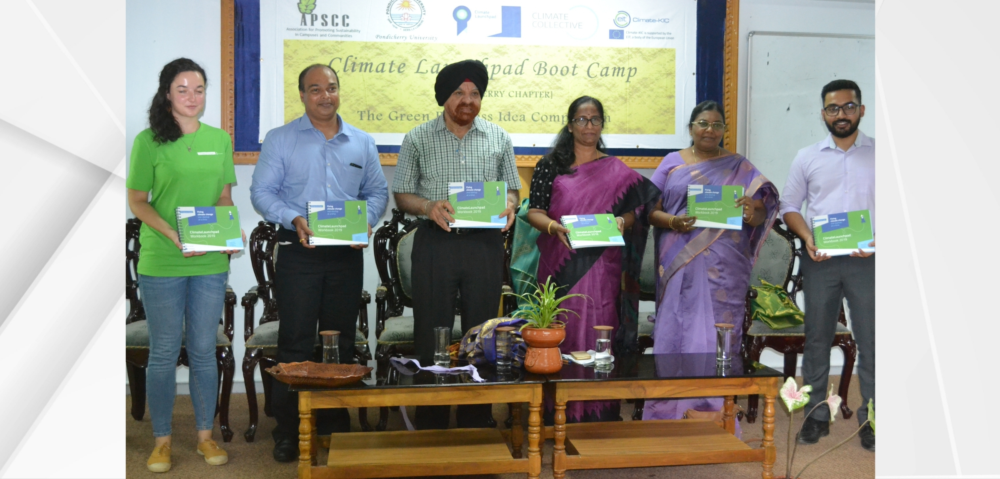
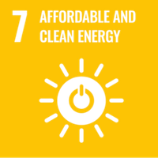
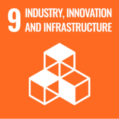

APSCC co-organised the Puducherry Chapter of ClimateLaunchpad 2019 — the world's largest green business ideas competition — at Pondicherry University, incubating a new generation of entrepreneurs with solutions for clean energy, waste and eco-technology.
Held as the Green Business Ideas Pitch & Boot Camp — Puducherry Chapter 2019, the programme brought together aspiring green innovators, mentors, sustainability experts and investors under a single roof. ClimateLaunchpad, part of the Climate-KIC / Climate Collective network, is the largest global platform of its kind, giving early-stage climate ventures the tools and visibility to grow.
Innovation on show
Participants pitched bold, practical concepts across renewable energy, waste management and eco-friendly technologies. Among the standout ideas were a garden-tending robot that disposes of sullage and a ceramic-tube electricity grid — inventive answers to everyday sustainability challenges rooted in local realities.

From idea to business model
The intensive boot camp guided teams through refining raw ideas into viable business models and sharpening their pitching techniques. Founders then presented to a panel of sustainability experts and investors, followed by structured networking that connected talent with mentors and potential backers.
Grassroots innovation, climate-positive impact
By nurturing entrepreneurial talent at the campus level, the event encouraged grassroots innovation and promoted climate-positive businesses. It reinforced APSCC's conviction that the transition to a sustainable economy will be powered by young founders turning ideas into enterprises. The programme was subsequently featured in The Hindu article, "Spotlight on Green Business Ideas."
Aligned with the SDGs
The programme advanced the following Sustainable Development Goals — spanning clean energy, innovation, responsible consumption, climate action and partnerships:




The next breakthrough for our planet may be in the hands of a student with a vision and a pitch deck.
Event: ClimateLaunchpad — Green Business Ideas Pitch & Boot Camp, Puducherry Chapter 2019, Pondicherry University · 2019. Featured in The Hindu, "Spotlight on Green Business Ideas."